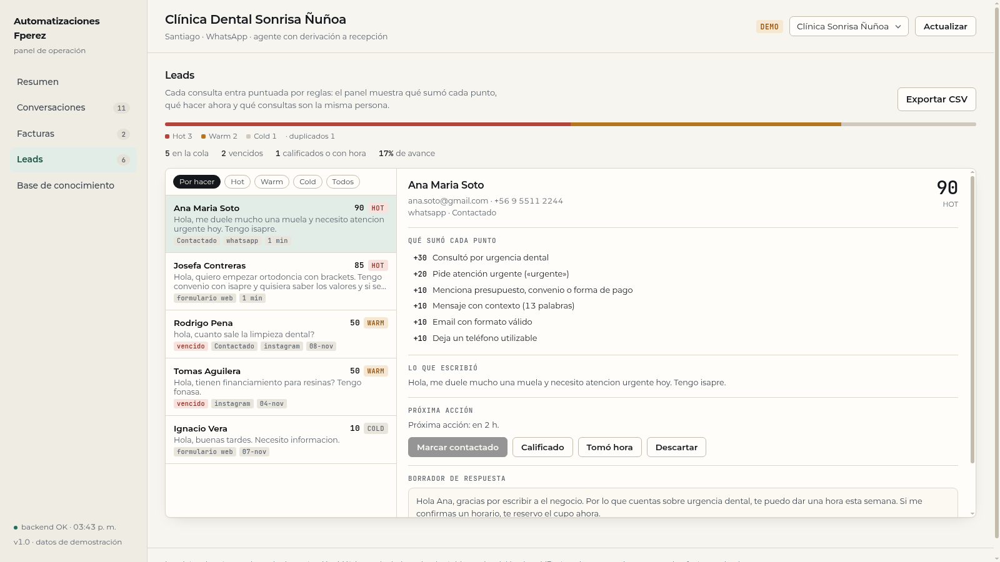

Módulo de captación para pymes. Cada mensaje que llega por formulario, WhatsApp o DM se puntúa con reglas: qué servicio pide, qué urgencia, si dejó teléfono, si preguntó precio, si escribió algo real. El panel muestra qué sumó cada punto, cuál es la próxima acción y cuáles son la misma persona. Sin modelo en el camino crítico: misma consulta, mismo puntaje, cero costo.

Cuatro pasos, todos con funciones puras sobre el texto del mensaje. La misma consulta siempre da el mismo puntaje, y cada punto se puede explicar.
Email en minúsculas y teléfono reducido a dígitos, con clave de dedupe por tenant. Si la persona vuelve a escribir por otro canal, no se duplica el trabajo: el lead nuevo queda apuntando al original y se muestra marcado.
Cada regla aporta puntos con nombre: service_match +30, urgency +20,
price_question +10, phone_ok +10, message_detail +10, y también resta
cuando corresponde (spam, out_of_scope). El total es la suma, no una corazonada.
HOT desde 70, WARM desde 40, COLD bajo 40. Del tier sale la acción: HOT se responde hoy, WARM entra a la cola de seguimiento, COLD se archiva. La cola ordena por score y por vencimiento, así lo que lleva dos días esperando aparece arriba aunque tenga menos puntos.
Lista con score, tier, origen y vencimiento; ficha con el desglose de puntos, el mensaje original y el borrador de respuesta; cambio de estado (contactado, calificado, tomó hora, descartado) y exportación a CSV para pasar la cola a la planilla que ya usa el negocio.
Set de 30 consultas generadas para cubrir lo que llega de verdad: urgencia dental, ortodoncia con
Isapre, preguntas de precio sin datos de contacto, referidos, mensajes de una línea, spam de dominio desechable,
postulaciones de trabajo, consultas fuera de servicio, y la misma persona escribiendo dos veces. Se corre con
eval_leadscore.py y cada corrida queda guardada en la base.
| Métrica | Valor | Cómo se mide |
|---|---|---|
| Consultas con tier correcto | 30/30 (100%) | HOT / WARM / COLD contra el tier esperado |
| Score dentro del rango esperado | 30/30 | banda por caso, para no sobreajustar a un número exacto |
| Motivos detectados | precisión y cobertura 100% | códigos que debían estar y códigos que no |
| Duplicados reconocidos | 100% | mismo email o teléfono normalizado, por tenant |
| Latencia por consulta | 0,05 ms mediana | de texto a score, en el contenedor de la API |
| Costo por consulta | US$ 0 | no hay llamada a modelo ni servicio externo |
Qué significa en trabajo real: de 100 consultas del mes, las que piden algo concreto y dejaron contacto aparecen arriba con la hora en que hay que responderlas; las que sólo preguntan precio o no dejaron datos no se pierden, pero no compiten por atención. Y si la misma persona escribe tres veces por tres canales, se atiende una vez.
Las tres que cambian el resultado y el costo de operarlo.
Calificar una consulta es aplicar el criterio del negocio: qué servicios vende, qué palabras indican urgencia, qué datos hacen falta para responder. Un modelo agrega varianza (la misma consulta puntuada distinto el martes) y costo por mensaje, y no se puede auditar por qué un lead salió HOT.
Acá el criterio está escrito en trece reglas con nombre y puntos. Cambiar el negocio es cambiar los puntos, no el modelo.
El score solo no sirve: «82» no dice qué hacer. Cada motivo trae su texto, y en la ficha se ve la suma completa. Si un lead sale HOT por una razón equivocada, se ve en el desglose y se corrige la regla.
Los códigos son estables, así que también se puede medir qué regla genera más ruido y ajustarla.
La misma persona escribiendo por WhatsApp y por el formulario es un contacto, no dos. El dedupe por email y teléfono normalizado deja el segundo apuntando al original, y las métricas los separan para no inflar el embudo con trabajo repetido.
El set de 30 vive en el repo con su golden.json, y el eval escribe cada corrida en la base. Si
mañana se toca una regla, la cifra sube o baja y se ve. Publicar «30/30» sin el set que lo respalda es
exactamente lo que este eval evita.
Preferible decirlo acá que descubrirlo en producción.
El scorer trabaja sobre el texto y los datos de contacto. No entiende ironía ni conversaciones largas: una consulta que dice «ok» sin contexto no sube de tier por más que venga de un cliente antiguo.
El borrador de respuesta se arma con plantillas y el servicio pedido. El envío es del negocio: este módulo ordena y explica, no conversa en nombre de la clínica.
Registra el origen declarado (formulario, WhatsApp, DM, referido), pero no cruza campañas ni costo por lead. Eso es otra pieza, con datos que hoy no están.
Los leads del panel son de una clínica ficticia; los números publicados salen de correr el eval sobre el set del repo.